ShamsaInk design system
Generated from reader/design/spec and the renders kept in reader/design/golden. The renders are what the reader draws, at a third of their size. Change the spec, then the template; make design-update says what is out of step.
Principles and rules
No clock, no bar, no ticking while reading: the reader sleeps until a touch or a button.
Kept by: by eye (the reading screen has no controls: checked)The dock at the bottom; the glance beside the finger; in landscape, at the grip.
Kept by: by eyeLight where there is a light, Listen where there is sound, colour on colour screens: a control the device lacks is not drawn, never greyed out. What the book lacks is another thing: Listen in a book with no narration is shown light, not a button, so the tools keep their places and the feature is seen to exist. And what is not built yet on a device that has the hardware (the Kindle's sound, 2026-11-06) is drawn, and a notice says it is not there yet.
Kept by: a control's `requires` is a capability, and CheckControls leaves it out of a device that lacks it (TestRequires); the light Listen is by eyeThe page buttons reach every control, for devices and people that need them.
Kept by: every screen has a page-button map when the device has page buttonsThe library's header and the book's bar are one component in one place: the way back or search at the start, the device's time, light and battery at the end.
Kept by: both screens are made from topbar.html (template check)Each layer its own box and waveform; black and white controls, no shadows, greys or motion. Smooth by default: no flash on a page turn or a panel; a wake from sleep flashes white, then the page, so the sleep screen does not stay behind the text.
Kept by: every component names a waveform the device has and a regionA tap on the page, Done, a close button or a jump: each closes everything at once and leaves the page alone, one refresh.
Kept by: a screen's dismiss is a tap off it or a control going to the page or back to where it came fromA tap outside a panel closes the panel and leaves the bar and dock it was opened from; a second tap on the page closes those. (Decided 2026-11-01 after use: kept, it saves a tap when moving between Light and Text.)
Kept by: by eye (the device walk closes Light, then uses the bar)The page, the bar and dock, one panel. No panel opens another; one may take another's place.
Kept by: no goto from a panel or overlay to a panel or overlay; replace stays in one layerThe bar holds what belongs to the device (time, headphones, light, battery); the dock what belongs to the book (where you are, its tools).
Kept by: by eyeChapter arrows, a tap on the bar or Contents leave "Back to page N" in the place line until two pages are read.
Kept by: by eye (dock's back control exists)Tokens
| Variable | Value |
|---|---|
--gap | 0.5em |
--ink | black |
--line | 3px |
--pad | 0.05em 0.6em |
--paper | white |
--radius | 0.4em |
| panel font | 40 px (1em); margin 40 px |
Layers, bottom up: page → screen → topbar → dock → panel → overlay
Devices
| Profile | Screen | Waveforms | Smallest tap | Page buttons | Fonts |
|---|---|---|---|---|---|
kobo-libra-colour | 1264 × 1680 at 300 ppi | A2, DU, GL16, REAGL, GC16 | 7 mm (+ 16 px slack) | yes | farsi: Parastoo; icons: Phosphor; icons_filled: Phosphor-Fill; text: DejaVu Sans; |
Components
| Component | Role | Purpose | States | Size | Refresh | Right to left |
|---|---|---|---|---|---|---|
bar | A progress bar with ticks; a tap on it goes anywhere. | share | DU, own-box | fills from the book's start side | ||
buttonhelper btn | Words, and an icon before them, in a border. Does one thing when tapped. | off, on | DU, own-box | mirrors on its own (logical properties) | ||
dialoghelper dlg | A question or a notice in a box: its sentence, a title in its own direction when there is one (a book's), a small note, then its buttons in a row: Close for a notice, the action then the way back for a question. One box wherever the reader asks or tells something (2026-11-06). | off | GL16, own-box | the page's direction; the title its own | ||
icon-buttonhelper ibtn | An icon alone in a box easy to tap, no border. Drawn filled when on. | off, on | 2.2em × 2.2em | DU, own-box | pointing icons are mirrored (.flip) | |
list-row | One row of a long list (Contents' entries); the current one bold on grey. A list is laid out and paginated by the engine. | off, current | GL16, page | the list runs in the book's direction; each row's indent is on its start side | ||
menu-item | One entry of a narrow menu: an icon and its words, the whole row the button; the last entry set apart by a line. | off | GL16, own-box | the menu hangs from the end side of the bar | ||
segmentshelper pick | One choice of a few, as one bar; the chosen one filled. | off, on | DU, own-box | mirrors on its own | ||
sliderhelper slide | A quantity set along a track, with a button for less and one for more; a tap on the track sets the value there. | value | 2.6em × 1.7em | DU, own-box | the track fills from the start side | |
stepperhelper step | A setting's row: its name, a minus, the value, a plus. | value | DU, own-box | mirrors on its own | ||
tabshelper pick | A few parts of one panel, one shown; the shown one bold and underlined, a line under all. | off, on | DU, own-box | mirrors on its own | ||
togglehelper pick | A switch: a track with a knob, dark with the knob at its end when on. | off, on | DU, own-box | the knob moves toward the end side |
Flow
Every way into a screen: from → to: gesture control. The app starts at the library; every way out of a panel lands on the page.
- library → reading: tap e
- contents → reading: tap e
- dock → contents: tap contents
- topbar → library: tap topbar-start
- library → loading: slow-open
- reading → sleep: power-button
- reading → sleep: idle
- library → sleep: power-button
- library → sleep: idle
- → splash: app-start
- library → splash: slow-open
- reading → topbar: tap-top-tenth
- reading → dock: tap-top-tenth
- dock → text: tap text
- menu → library-settings: tap settings
- library → library-sort: tap list-sort
- topbar → light: tap topbar-light
- topbar → menu: tap topbar-menu
- library → menu: tap topbar-menu
- menu → reading-settings: tap reading-settings
- topbar → battery: tap topbar-battery
- library → battery: tap topbar-battery
- reading → highlight-menu: hold-word
- library-book-menu → library-book-details: tap book-details
- library → library-book-menu: hold-row
- library-book-menu → library-book-remove: tap book-remove
- dock → notice: no-player
Screens
Renders for kobo-libra-colour, 1264 × 1680, shown at a third. Each screen opens on its own; the filter searches names, layers and control ids.
| Screen | Layer | Status | Controls | Renders |
|---|---|---|---|---|
| reading | page | built | 0 | 0 |
| contents | screen | built | 2 | 2 |
| library | screen | built | 9 | 1 |
| loading | screen | built | 0 | 2 |
| sleep | screen | built | 0 | 2 |
| splash | screen | built | 0 | 2 |
| topbar | topbar | built | 5 | 7 |
| dock | dock | built | 7 | 3 |
| text | dock | built | 9 | 2 |
| library-settings | panel | built | 3 | 2 |
| library-sort | panel | built | 1 | 1 |
| light | panel | built | 4 | 2 |
| menu | panel | built | 3 | 2 |
| reading-settings | panel | built | 2 | 1 |
| battery | overlay | built | 0 | 4 |
| highlight-menu | overlay | built | 3 | 2 |
| library-book-details | overlay | built | 0 | 1 |
| library-book-menu | overlay | built | 5 | 3 |
| library-book-remove | overlay | built | 2 | 1 |
| notice | overlay | built | 1 | 1 |
reading pagebuiltthe pagebuttons: {Next page Previous page The next chapter (the way back is the dock's Back); the dock is by touch only for now The previous chapter (the glance, while held, when it is built)}The book and nothing else. Every control is a layer over it, never written into it.
contents screenbuiltbuttons: {Ring down the list (past the end, the next page of it) Ring up the list Go there Back to the page}leave: contents-closeThe book's table of contents as a list, the current entry marked; a tap on an entry goes there.

library screenbuiltapp starts herebuttons: {Ring down the list (past the end, the next page of it) Ring up the list Go there Back to the page}The books, a row each, under the bar and the filters (Reading, New, Finished, All) with a sort button; always left to right, each row in its title's direction.
| Control | Component | Does | When |
|---|---|---|---|
topbar-phones | icon-button | Bluetooth sound | |
topbar-light | icon-button | goto → light | |
topbar-battery | button | goto → battery | |
topbar-menu | icon-button | goto → menu | |
filter- | segments | shows the books of a filter (reading, new, finished, all) | |
list-sort | icon-button | goto → library-sort | |
list-prev | icon-button | the previous page of rows | |
list-next | icon-button | the next page of rows | |
e | list-row | goto → reading |
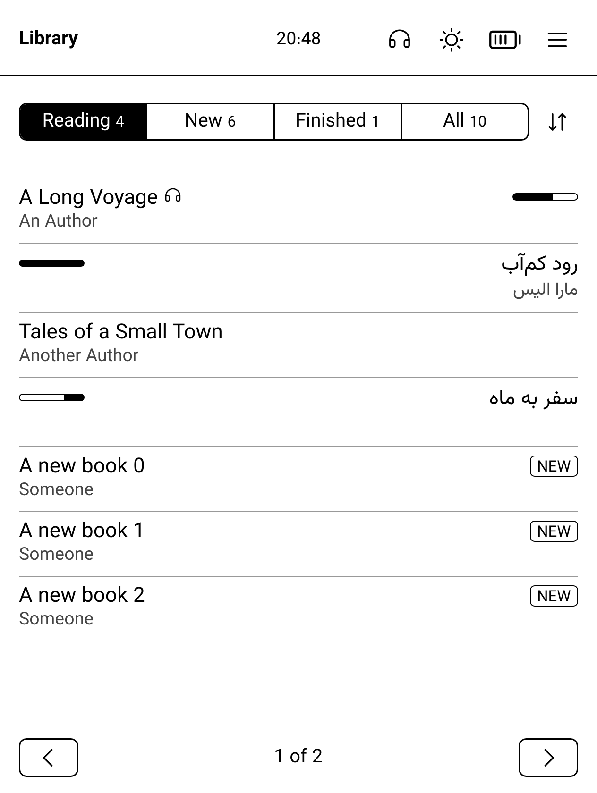
loading screenbuiltbuttons: {Nothing, the screen is left when the work is done Nothing Nothing Nothing}leave: automaticA book slow to open from the library: the mark and Opening…, in colour on a colour screen. Left when the page is ready.
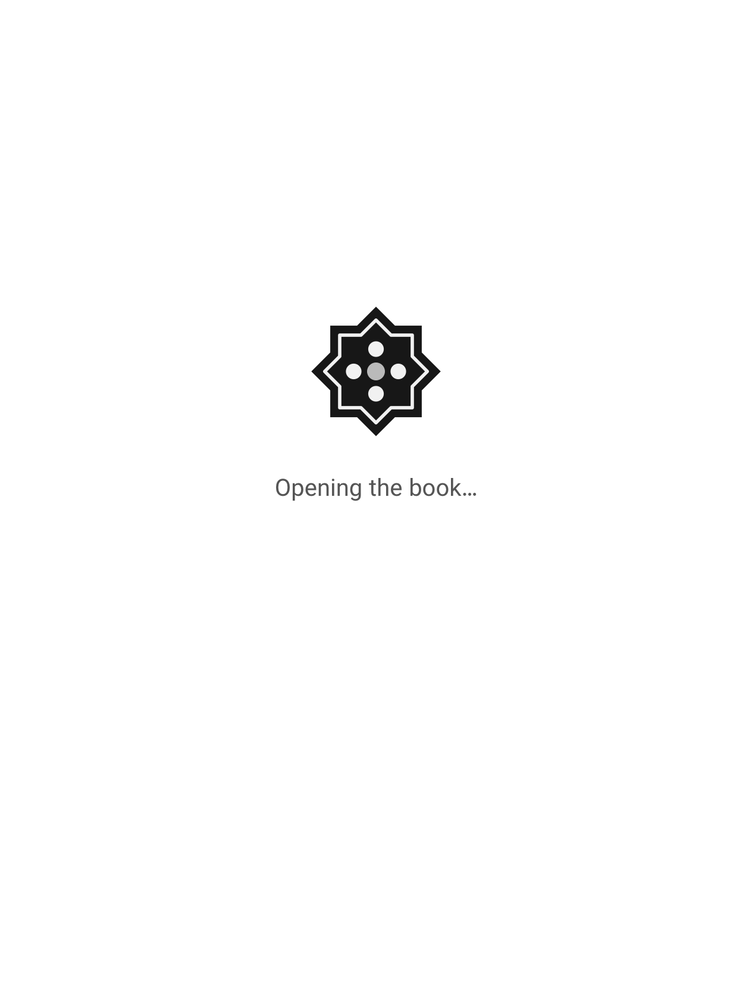
sleep screenbuiltbuttons: {Nothing, the screen is left when the work is done Nothing Nothing Nothing}leave: automaticThe sleep screen, while the device sleeps: one screen at random from the YAML files in ShamsaInk's sleep/ folder (docs/SLEEP-SCREEN-FORMAT.md): a couplet, a title or a quote drawn by the reader at the screen's own size, or a picture a file names (image:); grey ones follow dark mode. Only YAML files count: a picture alone in the folder is not shown. With none, or one that fails to load, the opening screen. The page comes back on waking, with a white flash first.
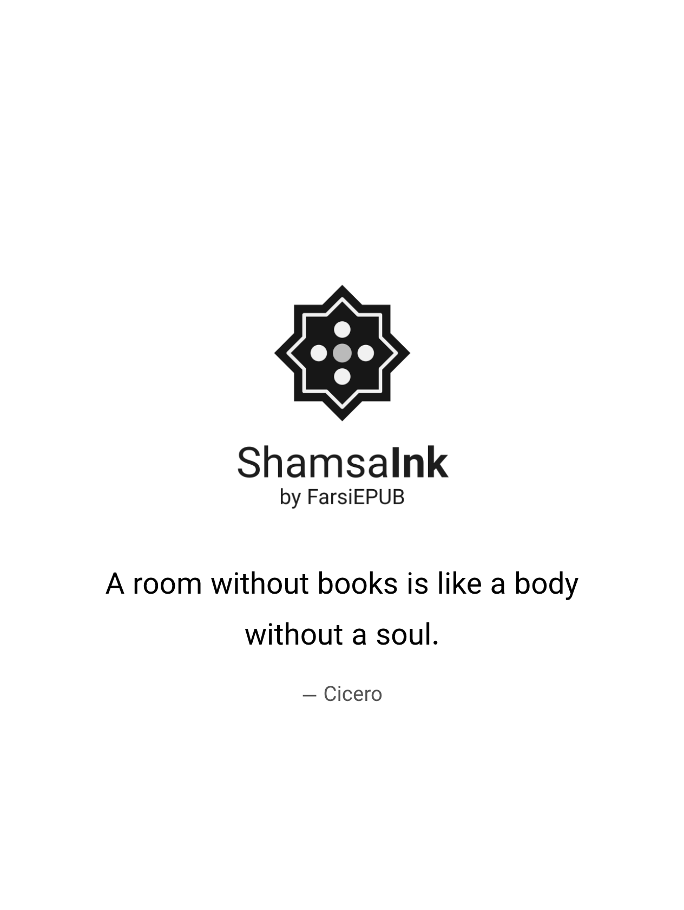
splash screenbuiltbuttons: {Nothing, the screen is left when the work is done Nothing Nothing Nothing}leave: automaticThe opening screen, at once when the reader starts (before the shelf is scanned) and while a book opens: ShamsaInk's stacked logo from FarsiEPUB's brand (the mark, the name, and the words by FarsiEPUB under it, no second logo). In colour on a colour screen, else grey; a quick open goes straight to the page.

topbar topbarbuiltbuttons: {Close everything and turn to the next page, one refresh Close everything and turn to the previous page, one refresh Nothing yet Nothing yet}leave: tap-outsideOver the page's top, the same in the library and a book.
| Control | Component | Does | When |
|---|---|---|---|
topbar-light | icon-button | goto → light | needs light |
topbar-start | icon-button | goto → library | |
topbar-phones | icon-button | Bluetooth sound | needs sound |
topbar-menu | icon-button | goto → menu | |
topbar-battery | button | goto → battery |
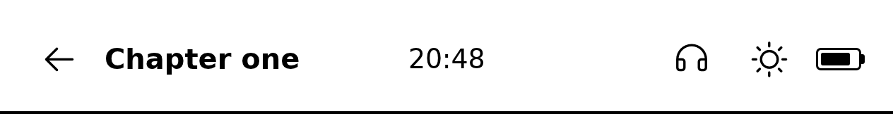
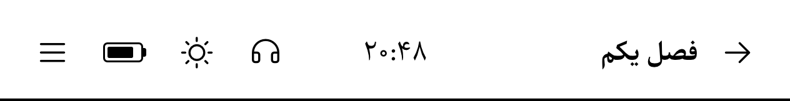
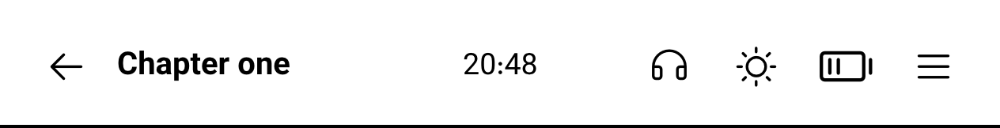
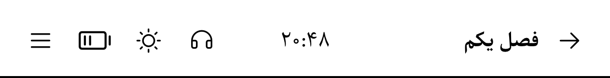
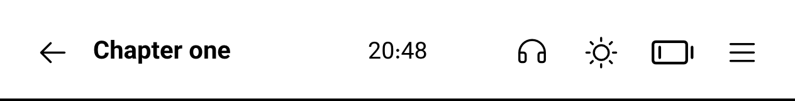
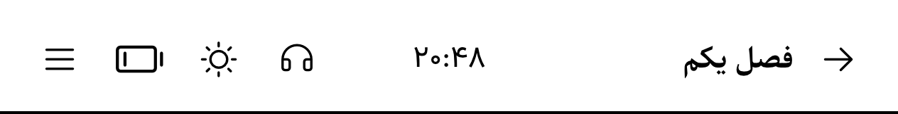
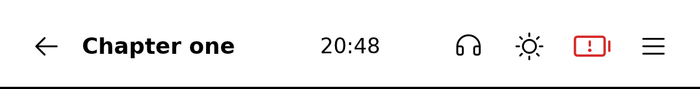
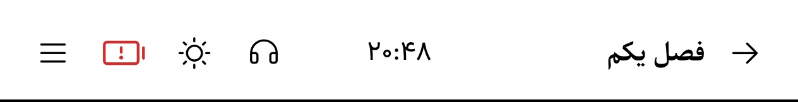
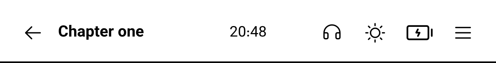
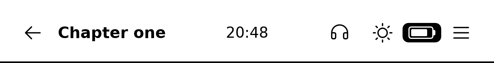
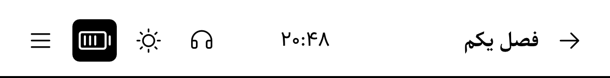
dock dockbuiltbuttons: {Close everything and turn to the next page, one refresh Close everything and turn to the previous page, one refresh Nothing yet Nothing yet}leave: tap-outsideWhere the reader is, a bar to go anywhere in the book, the way back after a jump, and the tools.
| Control | Component | Does | When |
|---|---|---|---|
chapter-prev | icon-button | the previous chapter | |
progress | bar | go to the share tapped | |
chapter-next | icon-button | the next chapter | |
back | button | back to where the jump started | after a jump |
contents | icon-button | goto → contents | |
text | icon-button | goto → text | |
read-aloud | icon-button | start the narration (where the device has no player of ours yet, the notice) | the book is narrated needs sound |
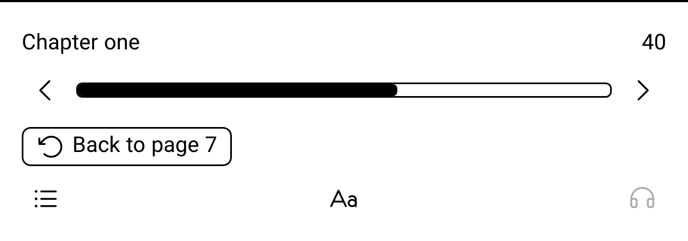
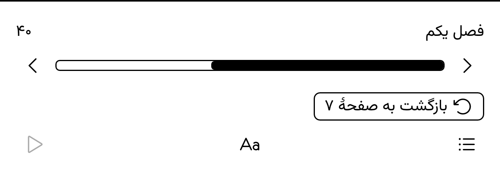
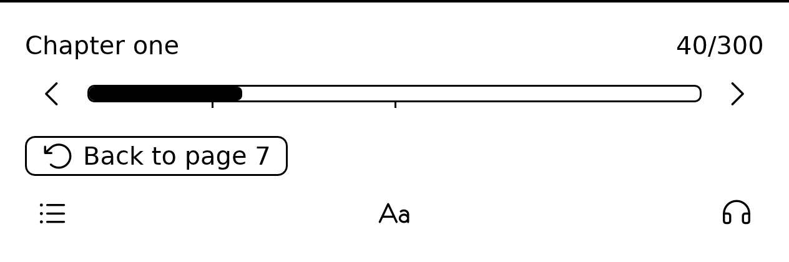
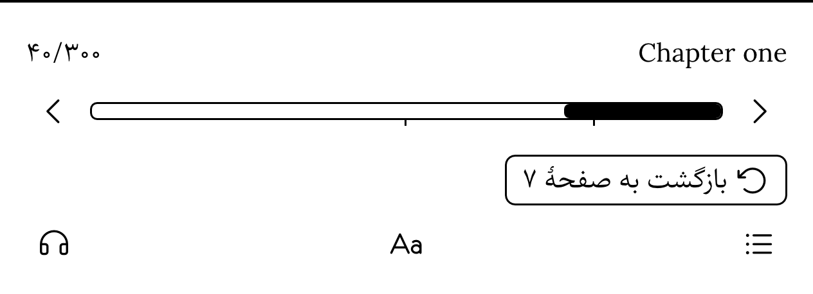
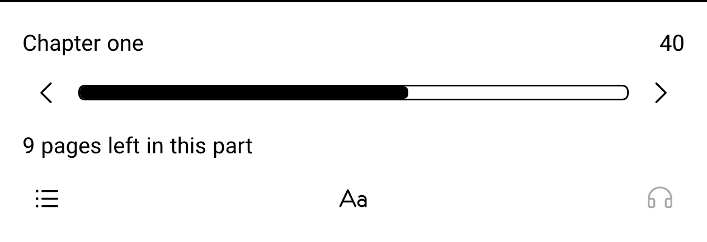
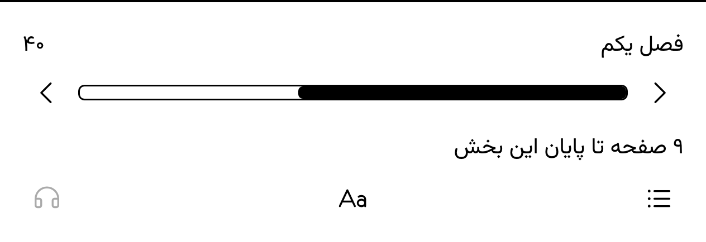
text dockbuiltbuttons: {Close everything and turn to the next page, one refresh Close everything and turn to the previous page, one refresh Nothing yet Nothing yet}leave: tap-outsideThe text's size, line spacing and margins, and the page turns' direction, with the page showing between the bar and the sheet.
| Control | Component | Does | When |
|---|---|---|---|
tab-text | tabs | shows the Text tab | |
tab-page | tabs | shows the Page tab | |
size | stepper | text size, smaller or larger | Text tab |
lines | stepper | line spacing | Text tab |
margin | stepper | margins | Text tab |
dir- | segments | page turns follow the book's direction | Page tab |
dir-rtl | segments | page turns right to left | Page tab |
dir-ltr | segments | page turns left to right | Page tab |
reset | button | the book's text settings back to the defaults |
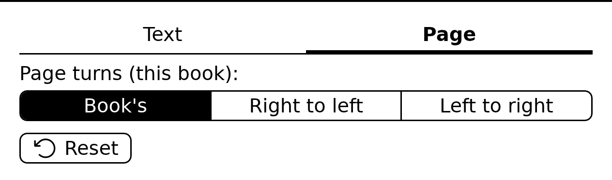
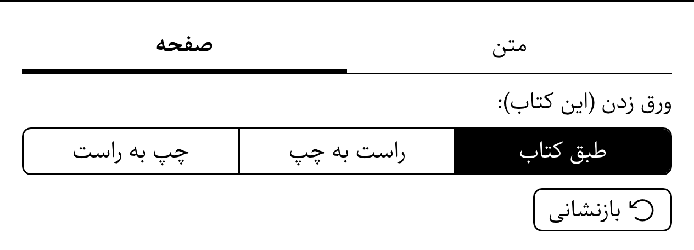
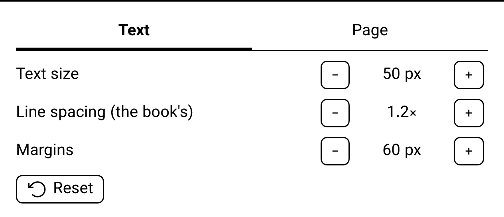
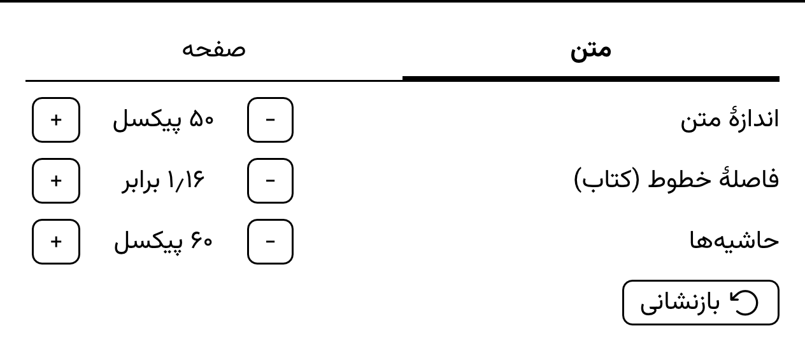
library-settings panelbuiltbuttons: {Ring to the next control Ring to the previous control Choose it (on a slider or stepper, one step up) Back out a level (on a slider, one step down)}leave: tap-outsideSettings, rows with no title: the switches (Follow book language, and on a device with page buttons Reverse page buttons) and then Sleep after with a stepper; under them, small and grey, the version of the reader running. A tap applies it at once.
| Control | Component | Does | When |
|---|---|---|---|
lang-follow | toggle | interface language follows the book's, or English only | |
buttons-reverse | toggle | the page buttons swapped: the lower goes back, the upper forward | needs buttons |
sleep | stepper | minutes untouched before the reader sleeps the device, or never |
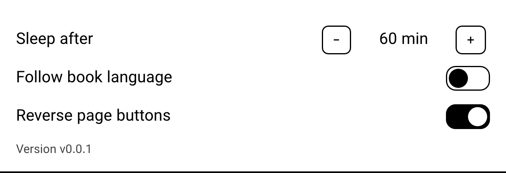
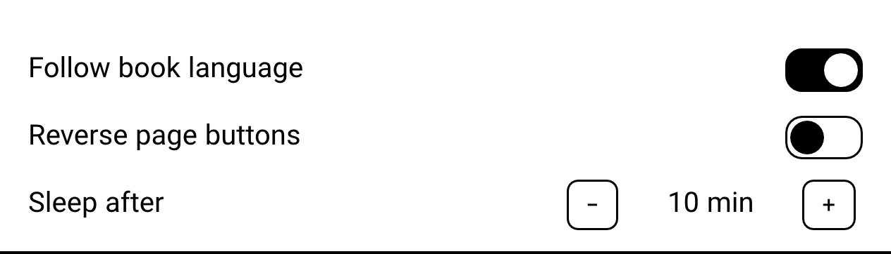
library-sort panelbuiltbuttons: {Ring to the next control Ring to the previous control Choose it (on a slider or stepper, one step up) Back out a level (on a slider, one step down)}leave: tap-outsideHow the books are sorted, under the filters (recent, title, author, added).
| Control | Component | Does | When |
|---|---|---|---|
sort- | segments | sorts the books by the name chosen |
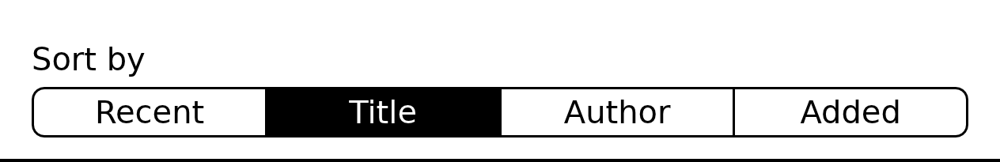
light panelbuiltbuttons: {Close everything and turn to the next page, one refresh Close everything and turn to the previous page, one refresh Nothing yet Nothing yet}leave: tap-outsideThe light's level and warmth, and a full refresh to clean the screen.
| Control | Component | Does | When |
|---|---|---|---|
light | slider | set the level | |
warmth | slider | set the warmth | needs warmth |
dark | button | dark mode on or off (filled when on): the whole screen inverted, with a full refresh | |
clean | button | a full refresh |
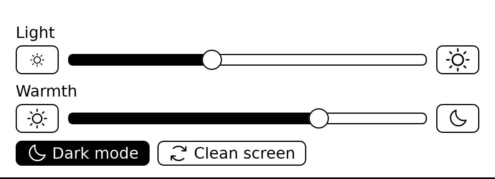
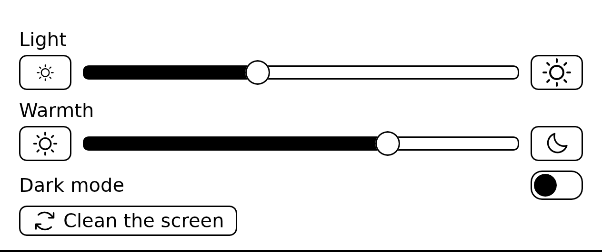
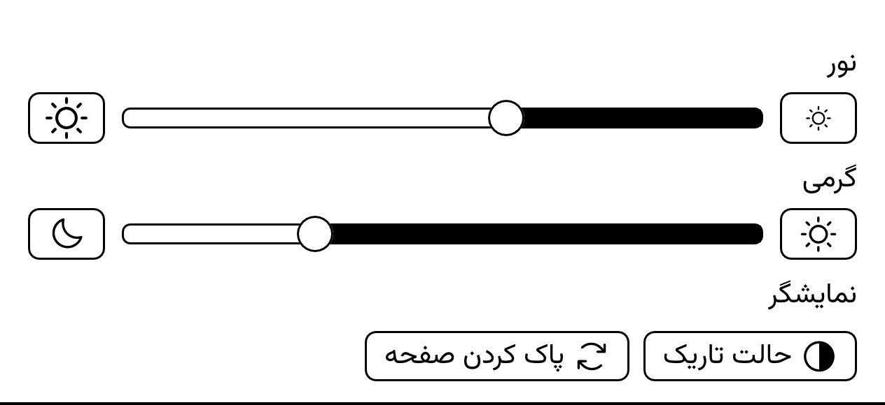
reading-settings panelbuiltbuttons: {Close everything and turn to the next page, one refresh Close everything and turn to the previous page, one refresh Nothing yet Nothing yet}leave: tap-outsideReading settings, in a book, in the menu's place: what acts on reading and does not need the page showing behind it (the Text sheet in the dock does). Now: the screen cleaned on its own (the automatic Clean screen: a full refresh, with its flash) every N page turns, light mode and dark apart. A tap applies it at once.
| Control | Component | Does | When |
|---|---|---|---|
clean-light | stepper | page turns between cleanings of the screen in light mode, or never | |
clean-dark | stepper | page turns between cleanings of the screen in dark mode, or never (5 at first) |
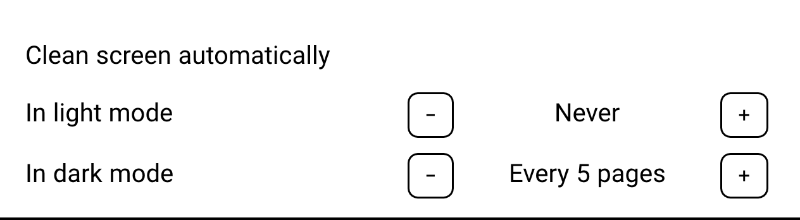
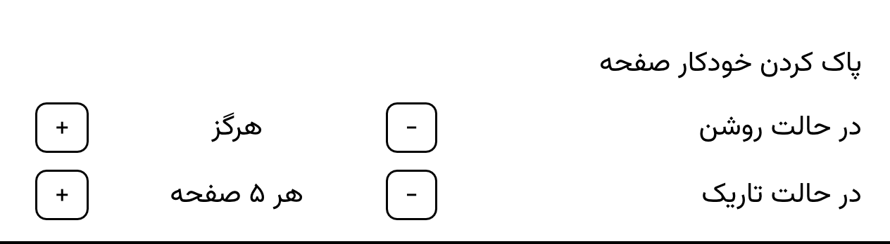
battery overlaybuiltbuttons: {Close everything and turn to the next page, one refresh Close everything and turn to the previous page, one refresh Nothing yet Nothing yet}leave: tap-outsideThe battery's level, and below it charging, fully charged or low when it is, in a small box hanging from the bar under its battery; any tap closes it.
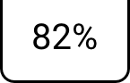
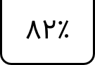
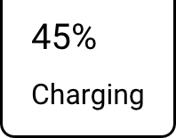
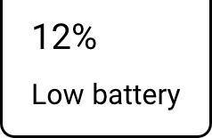
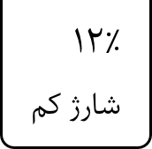
library-book-details overlaybuiltbuttons: {Ring to the next control Ring to the previous control Choose it (on a slider or stepper, one step up) Back out a level (on a slider, one step down)}leave: tap-outsideA book's facts, read only, in the menu's place; any tap closes it.
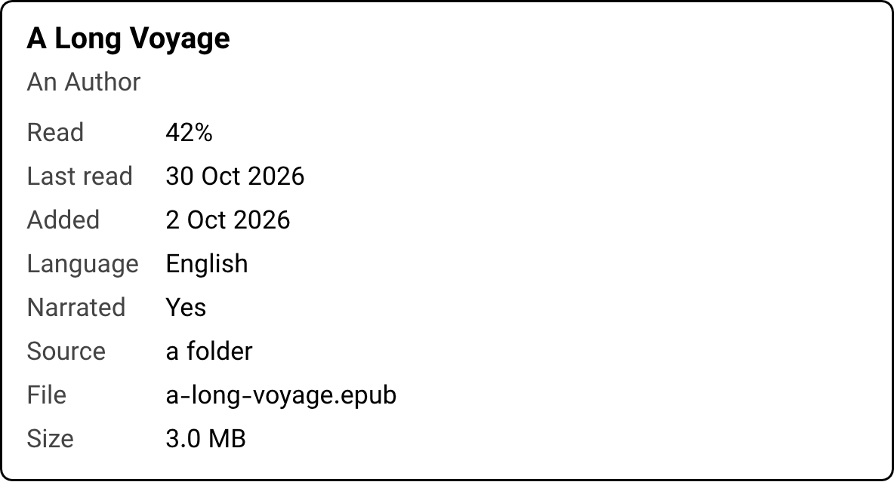
library-book-remove overlaybuiltbuttons: {Ring to the next control Ring to the previous control Choose it (on a slider or stepper, one step up) Back out a level (on a slider, one step down)}leave: tap-outsideAsks before a book is removed, the dialog component in the middle of the screen: what is removed, then Remove and Keep. Removing deletes the file and all the reader keeps for it.
| Control | Component | Does | When |
|---|---|---|---|
book-remove-yes | button | deletes the book's file and what the reader keeps for it | |
book-remove-no | button | keeps the book |
notice overlaybuiltbuttons: {Close everything and turn to the next page, one refresh Close everything and turn to the previous page, one refresh Nothing yet Nothing yet}leave: tap-outsideA notice in the middle of the screen, over the dock, the dialog component with a sentence and Close; any tap closes it. Now the one Listen shows where the device has no player of ours yet (the Kindle): Listening is not possible on this device.
| Control | Component | Does | When |
|---|---|---|---|
notice-close | button | closes the notice |
Page buttons
| Map | Forward | Back | Hold forward | Hold back |
|---|---|---|---|---|
list | Ring down the list (past the end, the next page of it) | Ring up the list | Go there | Back to the page |
listening | Next page (the voice follows) | Previous page | Pause or play | A sentence back |
none | Nothing, the screen is left when the work is done | Nothing | Nothing | Nothing |
panel | Close everything and turn to the next page, one refresh | Close everything and turn to the previous page, one refresh | Nothing yet | Nothing yet |
reading | Next page | Previous page | The next chapter (the way back is the dock's Back); the dock is by touch only for now | The previous chapter (the glance, while held, when it is built) |
ring | Ring to the next control | Ring to the previous control | Choose it (on a slider or stepper, one step up) | Back out a level (on a slider, one step down) |
word-held | Selection one word longer | One word shorter | Highlight | Cancel |